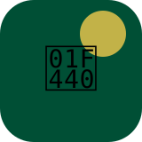
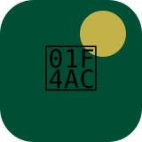
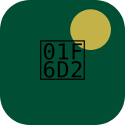

Voorbereiding
Concept, contentstrategie, leveranciersselectie en sampleboxen.
De campagne bouwt eerst bekendheid op, verdiept daarna de houding en activeert vervolgens gedrag.

Omdat het thema lokale producten nog onvoldoende zichtbaar is, begint de campagne met uitleg en inspiratie voordat er verkoopdruk wordt toegevoegd.
Concept, contentstrategie, leveranciersselectie en sampleboxen.
Social advertising, buitenreclame, eerste portretten en e-mailcampagne.
MagaZiNe-thema, PR, ZiN-workshop en extra POS-materiaal in de vestiging.
Introductiekorting, proeverijen, LinkedIn-campagne en eindmeting.

Bereik opbouwen via LinkedIn, Instagram, Google Display en OOH rondom de vestiging.

Houding versterken via leveranciersportretten, ZiN-content, nieuwsbrief en vakmedia.

Gedrag activeren via proeverijen, sampleboxen, introductiekorting en productbundels.
Bekendheid met het lokale assortiment, associatie met lokale betrokkenheid en groei in afzet vormen samen de meetbare basis.